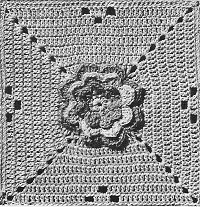

Rose Garden - Free Crochet Bedspread Pattern MATERIALS: J. & P. COATS "KNIT-CRO-SHEEN", Art. A. 64: Single Size Spread: 90 balls of No. 46-A Mid Rose and 23 Balls of No. 122 Watermelon. Double Size Spread: 110 balls of No. 46-A Mid Rose and 28 balls of No. 122 Watermelon. Milwards Steel Crochet Hook No. 7. Motif measures 5 inches square MOTIF Starting at center with Mid Rose, ch 5. Join with sl st to form ring. 1st rnd: (Sc in ring, ch 1) 8 times. Join to first sc. Break off and fasten. Attach Watermelon in first ch-1 sp. 2nd rnd: Ch 1, sc in same sp, ch 2, (sc in next ch-1 sp, ch 2) 7 times. Join to first sc. 3rd rnd: In each sp around make sc, hdc, dc, ch 2, dc, hdc and sc. Join as before (8 petals). 4th rnd: Ch 1, sc in joining, (ch 3, holding petal forward, sc between next 2 petals) 7 times; ch 3. Join. Break off and fasten. Attach Mid Rose in first loop. 5th rnd: In each loop around make sc, hdc, 2 dc, ch 2, 2 dc, hdc and sc. Join. 6th rnd: Work as for 4th rnd making ch 4 (instead of ch 3) and changing colors at end of rnd as before. 7th rnd: In each loop around make sc, hdc, 3 dc, ch 2, 3 dc, hdc and sc. Join. 8th rnd: Work as for 4th rnd, making ch 5 (instead of ch 3). Change colors at end of rnd, attaching Mid Rose in joining. 9th rnd: Ch 3 to count as first dc, (7 dc in each of next 2 loops, in next sc make dc, ch 3 and dc - corner) 3 times; 7 dc in each of next 2 loops, dc in same place where thread was attached, ch 1, hdc in top of ch-3. 10th rnd: Ch 3, dc in sp just formed, * dc in each dc across to next corner sp, in corner sp make 2 dc, ch 3 and 2 dc. Repeat from * around, ending with 2 dc in same place as first dc, ch 1, hdc in top of ch-3. Next 3 rnds: Repeat 10th rnd. 14th rnd: Ch 3, dc in sp just formed, * dc in next 15 dc, ch 2, skip next 2 dc, dc in next 15 dc, in corner sp make 2 dc, ch 3 and 2 dc. Repeat from * around, ending as on 10th rnd. 15th rnd: Ch 3, dc in sp just formed, * dc in next 14 dc, ch 2, skip next 2 dc, dc in next dc, 2 dc in next sp, dc in next dc, ch 2, skip next 2 dc, dc in next 14 dc, in corner sp make 2 dc, ch 3 and 2 dc. Repeat from * around, ending with 2 dc, ch 3. Join to top of ch-3. Break off and fasten. For Single Size Spread: make 15 rows of 21 motifs. For Double Size Spread: make 18 rows of 21 motifs. Sew motifs neatly together. BORDER Attach Mid Rose in any corner sp. 1st rnd: Ch 3, dc in same sp, * dc in next 16 dc, ch 2, skip next sp, dc in next 4 dc, ch 2, skip next sp, dc in next 16 dc, 2 dc in next sp, dc in joining between motifs, 2 dc in next sp. Repeat from * across to within next corner sp, in corner sp make 2 dc, ch 3 and 2 dc. Work remaining 3 sides in same manner, ending the 4th side as on 10th rnd. 2nd rnd: Ch 3, dc in sp just formed, dc in next 18 dc, * 2 dc in next sp, dc in next dc, ch 2, skip next 2 dc, dc in next dc, 2 dc in next sp, dc in each dc across to within next sp. Repeat from * across to within next corner sp, in corner sp make 2 dc, ch 3 and 2 dc. Work remaining 3 sides in same manner, ending as before. 3rd rnd: Ch 3, dc in sp just formed, making 2 dc in each ch-2 sp across, dc in each dc across to within next corner sp, in corner sp make 2 dc, ch 3 and 2 dc. Work remaining 3 sides in same manner, ending the 4th side as on 15th rnd. Break off and fasten. Attach Watermelon in any corner sp. 4th rnd: In corner sp make sc, ch 2 and sc (picot made). Picot in next dc, * skip next dc, picot in next dc. Repeat from * across to within next corner sp, picot in corner sp. Work remaining 3 sides in same manner. Join to first sc. Break off and fasten. Block to measurements.  HOME |